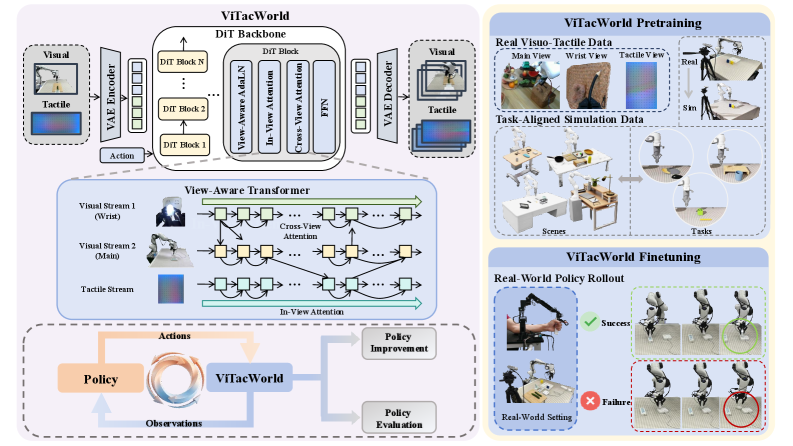
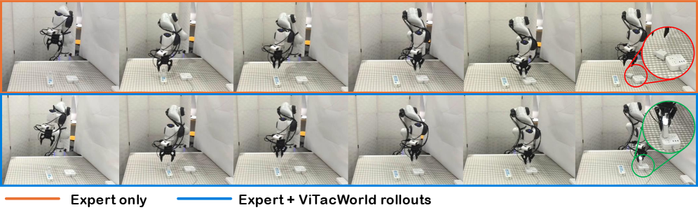

World ModelXense TactileCosmos-Predict2.5 2BIsaac SimContact-Rich
제출: 2026년 7월 24일 · OmniViTac 21K+ 실 tactile + 5K+ 시뮬 · 4 contact-rich task
한 줄 요약 (TL;DR)
Contact-rich 조작에는 카메라로 안 보이는 물리 신호가 필요한데, visuo-tactile 데이터는 비싸고 하드웨어 종속적이다. ViTacWorld는 실 tactile(Xense) 21K+ 궤적 + Isaac Sim에서 렌더한 5K+ 궤적을 섞어 스케일하고, Cosmos-Predict2.5 2B 위에 stream-aware self-attention + cross-view attention의 DiT로 action-conditioned 미래 visual + tactile을 함께 예측. rollout으로 정책을 42.5% → 67.5%(평균) 개선, prediction 품질 PSNR 24.26·SSIM 0.829·LPIPS 0.051, 정책 평가는 실제와 ±10%p. 최초의 visuo-tactile world model 프레임.
1배경 · 문제의식
정밀 삽입·박피·플러그 꽂기 같은 contact-rich 태스크는 카메라만으로는 접촉/마찰/미끄러짐 같은 결정적 신호가 관측되지 않는다. tactile 센서(Xense·GelSight 등)로 이를 보완할 수 있지만, (i) 실제 tactile 데이터는 수집 비용이 높고, (ii) 센서가 하드웨어 종속적이며, (iii) 시뮬 데이터는 시각 sim-to-real gap이 크다. 저자들은 tactile은 접촉에 grounded되어 있어 시각보다 sim-to-real gap이 오히려 작다는 관찰에서 출발해, 실 tactile + 시뮬 tactile을 함께 사용해 visuo-tactile world model을 스케일한다.
2핵심 Contribution
최초의 visuo-tactile world model — action-conditioned로 미래 visual observation + tactile feedback을 시간 정렬해 함께 예측. rollout 생성과 정책 평가 두 역할.
OmniViTac 21K+ 궤적(Xense · GelSight Mini · Tac3D · Daimon)
시뮬 tactile
Isaac Sim + Xense 렌더 5K+ task-aligned 궤적, 3D Gaussian scan으로 실 씬 재구성
동기화
시각 관측과 tactile 프레임을 시간 정렬
백본 · 토큰화
Cosmos-Predict2.5 2B 체크포인트를 확장. VAE 인코더가 시각 스트림과 tactile 스트림을 각각 latent 토큰으로 변환. tactile 스트림은 gripper 양쪽 finger 각각(2뷰) 인코딩.
Stream-aware / Cross-view Attention
각 스트림 내부에서 stream-aware self-attention을 먼저 적용해 정렬을 보존한 뒤, 명시적 cross-view attention 모듈로 카메라와 tactile 스트림 간 정보 교환. 이 순서 덕분에 tactile의 국소 패턴이 시각 프레임 전체와 뭉개지지 않는다.
Diffusion (Latent Denoising)
미래 visual·tactile latent에 latent denoising 목적. timestep과 action을 AdaLN modulation으로 주입. 사전학습(real+sim) 후 real-world policy rollout로 downstream 파인튜닝.
두 가지 사용 모드
Rollout 데이터 augmentation — 학습된 정책의 rollout을 ViTacWorld로 확장해 policy 재훈련에 사용.
정책 평가 — 통제된 action sequence를 조건으로 미래 visuo-tactile을 예측해 실행 없이 정책 품질을 sneak-preview.
4실험 결과
Rollout 증강으로 정책 성공률 향상 (Xense sensor 4 task)
Task
Demo 수
Expert-only
Expert + ViTacWorld
Charger Plugging
120
40%
40%
Cucumber Peeling
50
40%
80%
U-Block Insertion
62
70%
80%
Cuboid Insertion
68
40%
70%
Mean
—
42.5%
67.5%
Prediction Quality (Validation)
메트릭
메인 카메라
PSNR ↑
24.26
SSIM ↑
0.829
LPIPS ↓
0.051
정책 평가 (Sim-Preview)
ViTacWorld가 예측한 rollout 성공률은 실제 실행 성공률과 ±10%p 이내에서 일치. 즉, 실행 없이도 정책 품질을 근사할 수 있음.
비교 baseline
Vision-only π₀.₅
π₀.₅ + tactile policy
ACT + tactile
5Ablation / 관찰
Tactile의 sim-to-real gap이 시각보다 작다 — tactile은 물리 접촉에 grounded되어 시뮬 렌더가 실측과 통계적으로 유사. 이 관찰이 sim data 활용을 정당화.
Stream-aware → cross-view 순서 — 반대 순서면 tactile 국소 신호가 시각 전체에 뭉개지는 경향. 순서가 결정적.
Cucumber Peeling에서 이득이 가장 큼 — 40 → 80%. 시각으로 안 보이는 마찰·미끄러짐이 지배적인 태스크에서 tactile 세계 모델의 가치가 극대화.
Charger Plugging은 이득이 0 — 정밀 정렬은 이미 expert가 잘하는 경우가 있고, world model의 도움이 미미. 태스크 특성별 이득 차 있음.
6핵심 Figure / Table

Figure 1 — ViTacWorld 개요. 실 tactile 21K+ + 시뮬 5K+로 사전학습된 view-aware DiT가 action-conditioned 미래 visual+tactile을 함께 예측 → rollout augmentation과 policy evaluation 두 용도로 사용. (출처: arXiv:2607.22530)

Figure 2 — Expert vs Augmented 정성 비교. Expert-only 정책은 pickup·정렬 단계에서 실패, ViTacWorld augmented 정책은 grasp localization과 tactile-guided correction이 더 정확. (출처: arXiv:2607.22530)
왜 중요한가 — 최근 world model 연구는 대부분 시각 위주(Rofacto·MVA 등)였는데, ViTacWorld는 tactile까지 결합한 최초의 프레임. 정책 evaluation을 실행 없이 근사할 수 있다는 점은 실로봇 반복 실험 비용을 크게 낮춘다.